第三轮图纸对照
六张原图与对应模型视图。石材纹理、灯光及图纸未标注的细部为展示设定。
一层平面
两户餐厅各12座。首层入户门、主台阶和储藏窗按图复核。餐厅侧门与天井的标高衔接待剖面明确。
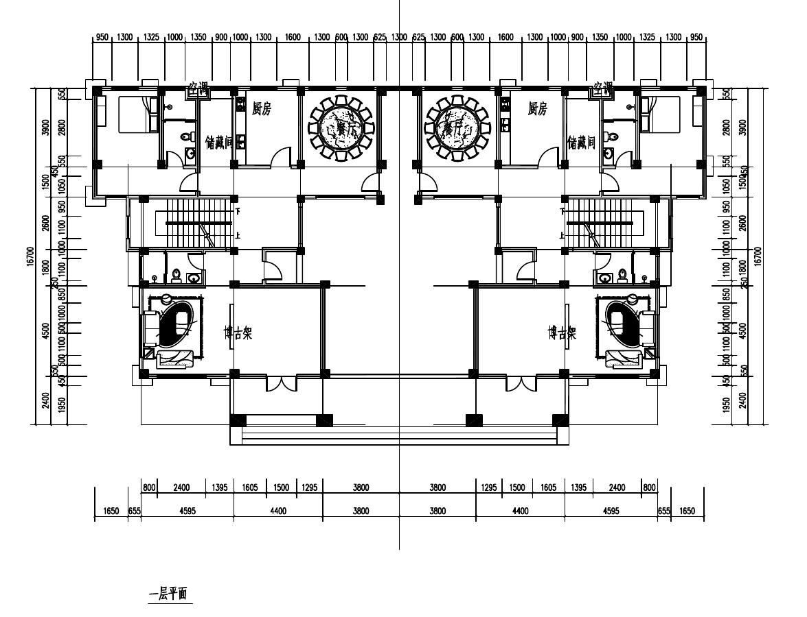

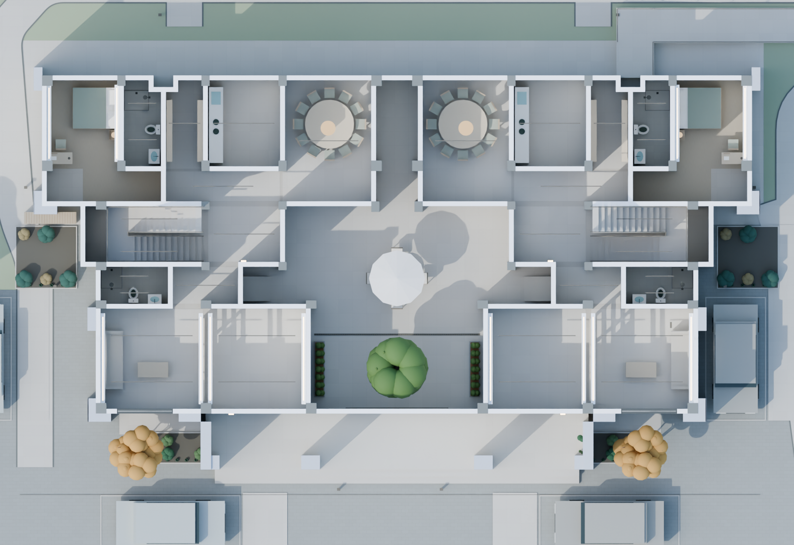
二层平面
两处露台独立。南端连续部分作前廊盖板和砖栏板。转角通道保留图上踏步线，高差待确认。
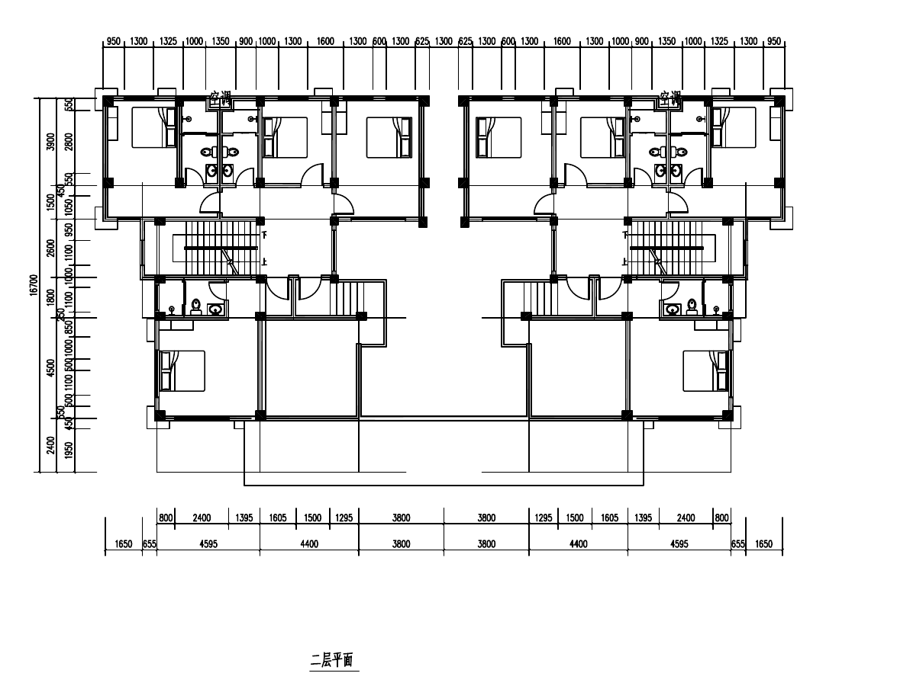

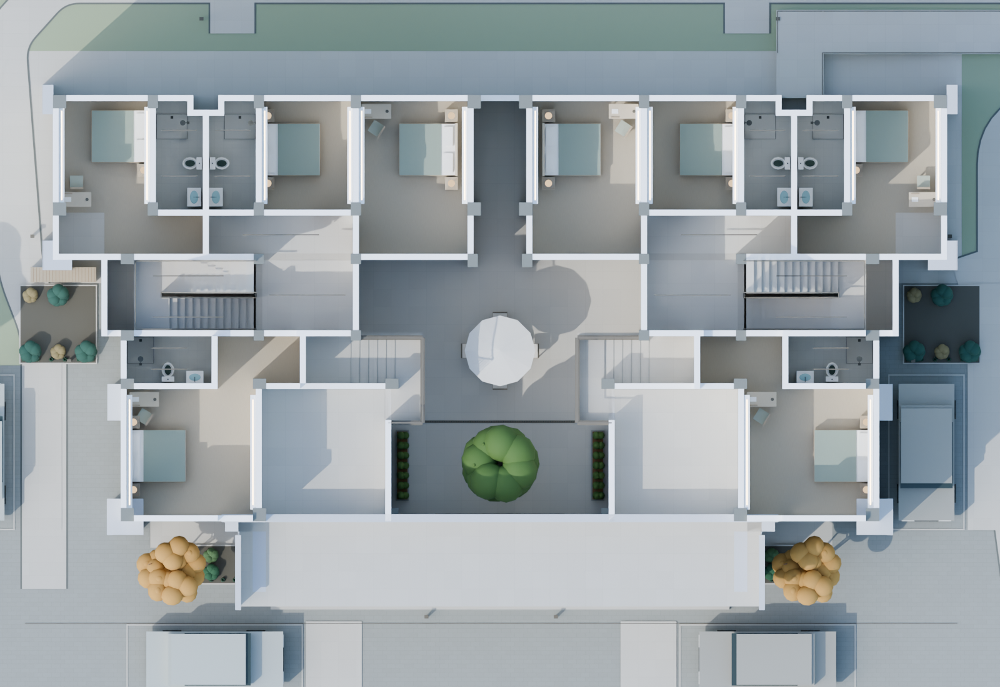
三层平面
每户三卧两卫。南侧虚线与屋面轮廓属于下层投影，三层无阳台。
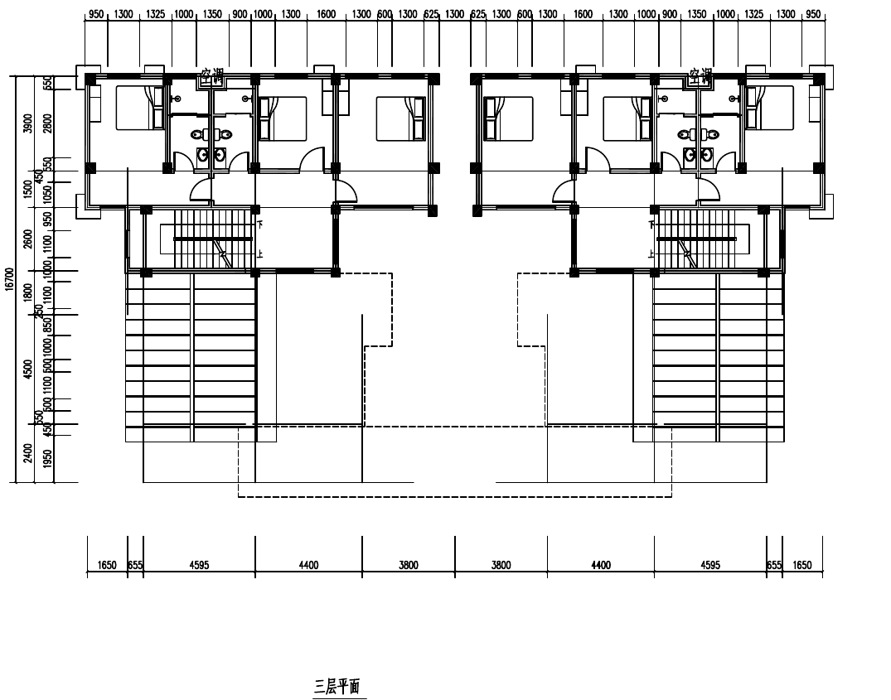

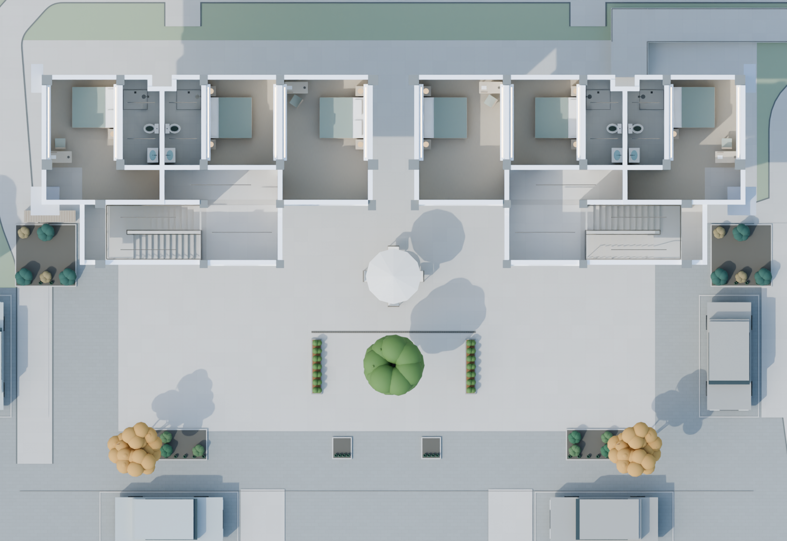
屋顶平面
连续主脊与两侧山墙按屋顶图定位。上山墙外端的屋顶投影比南立面向外约655毫米，模型取屋顶平面范围；谷线按坡面交接调整。
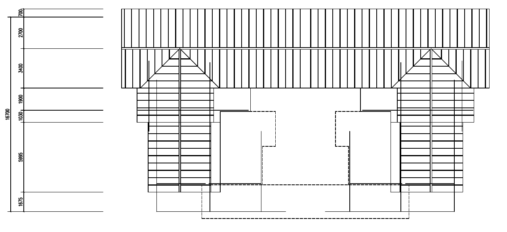

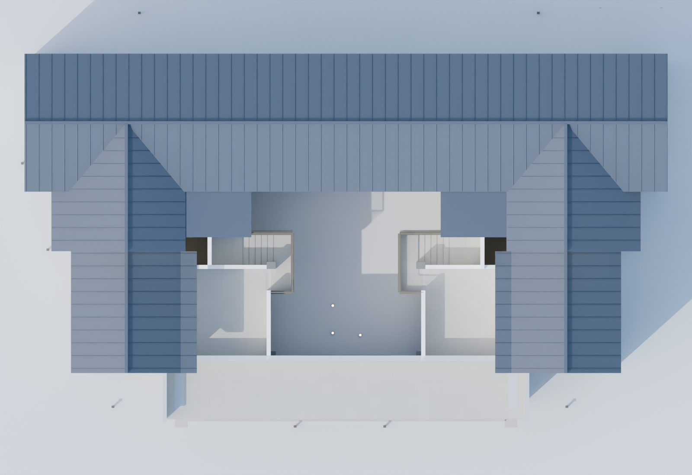
南立面
两侧连窗均采用平面标注的2.40米。装饰墩、前廊柱及横带逐条采用原图石材缝线坐标。
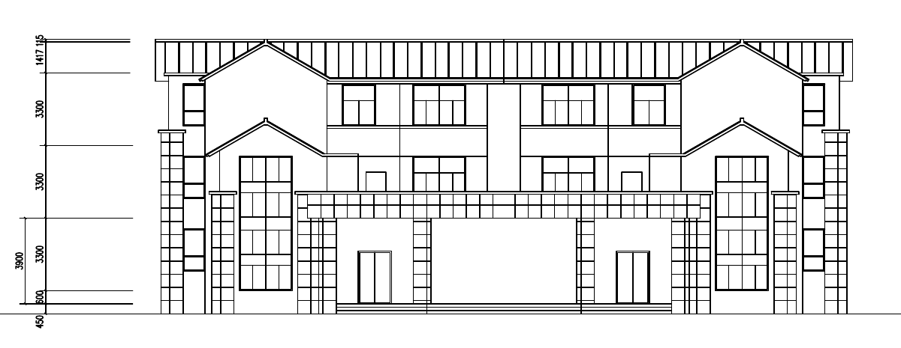

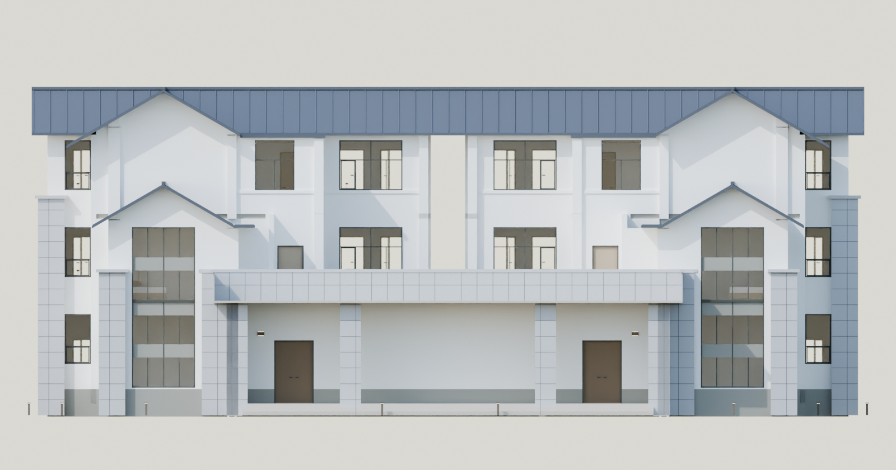
西立面
按西立面图定位方格大理石饰面和分缝，普通墙面采用白色，屋顶采用灰色。
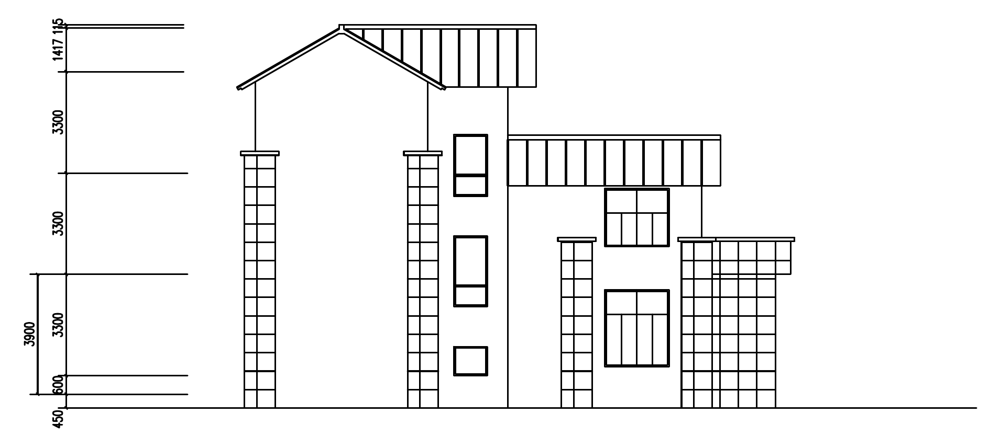

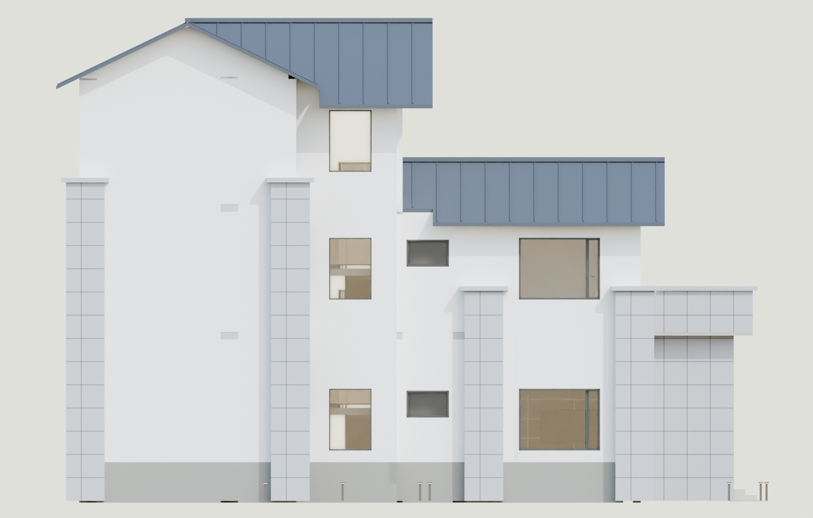